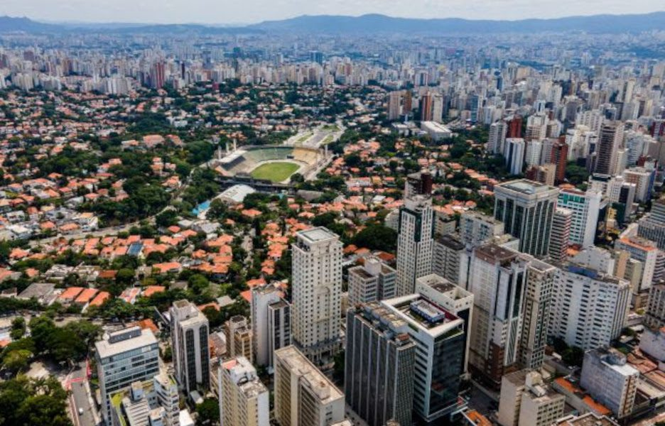
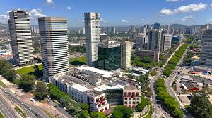
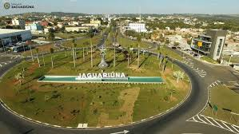
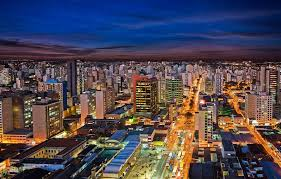
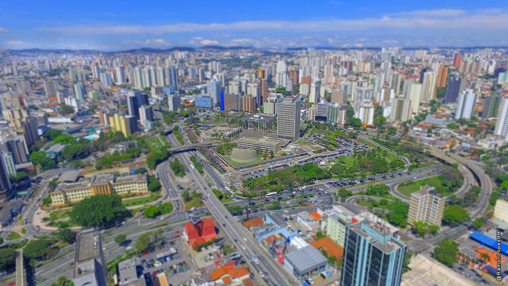

As 10 Cidades Mais Tecnologicas de São Paulo
Vejá as cidades mais inteligentes de São Paulo
1º São Paulo

A cidade de São Paulo ocupa o primeiro lugar no ranking das cidades mais inteligentes do estado por ser o
maior
centro econômico, tecnológico e cultural do Brasil. A capital concentra universidades renomadas, polos de
inovação e startups que impulsionam soluções em mobilidade, saúde, educação e sustentabilidade. Esse
ecossistema
dinâmico cria um ambiente fértil para a aplicação de novas tecnologias e políticas públicas que visam
melhorar a
qualidade de vida da população. Outro fator decisivo é a infraestrutura avançada da cidade. São Paulo conta
com sistemas de transporte
diversificados, projetos de mobilidade urbana inteligente, grande cobertura de internet e serviços digitais
que
facilitam a vida dos cidadãos. Além disso, o uso de dados e tecnologias em áreas como segurança, gestão de
tráfego e monitoramento ambiental demonstra a capacidade da capital em integrar inovação à administração
pública. Por fim, São Paulo se destaca pelo volume de investimentos, tanto do setor público quanto privado,
destinados
a
projetos de smart city. A cidade lidera em iniciativas de governo digital, sustentabilidade e participação
cidadã, criando soluções que servem de modelo para outros municípios. Essa soma de tecnologia,
infraestrutura e
inovação faz da capital paulista a cidade mais inteligente do estado, consolidando seu papel de liderança e
referência nacional.
2º São Caetano do Sul
São Caetano do Sul aparece bem posicionada no ranking das cidades mais inteligentes de São Paulo por conta da
sua
alta qualidade de vida e boa gestão pública. A cidade investe fortemente em educação, saúde e segurança, o
que
garante indicadores acima da média em comparação com outros municípios. Esse equilíbrio entre
desenvolvimento
urbano e bem-estar da população faz com que São Caetano seja vista como uma cidade-modelo. Outro ponto
importante é a infraestrutura moderna e bem organizada. A cidade possui ruas planejadas, bons
serviços de transporte e um sistema de coleta e reciclagem de resíduos eficiente. Além disso, São Caetano
investe em tecnologia para facilitar a comunicação entre cidadãos e prefeitura, aproximando a população das
decisões e serviços públicos. Por fim, São Caetano do Sul se destaca também pelo tamanho reduzido em relação
à capital. Por ser uma cidade
menor, a administração consegue implementar soluções de forma mais rápida e eficaz, tornando a gestão
pública
mais próxima e eficiente. Esses fatores, somados a altos índices de desenvolvimento humano e inovação,
justificam a posição de destaque da cidade no ranking das cidades mais inteligentes do estado.
3º Barueri

Barueri ocupa uma posição de destaque no ranking das cidades mais inteligentes de São Paulo principalmente
pelo
seu forte desenvolvimento econômico e tecnológico. A cidade abriga importantes centros empresariais, como a
região de Alphaville, que concentra grandes empresas nacionais e multinacionais. Essa presença empresarial
fortalece a economia local e impulsiona investimentos em infraestrutura e inovação, colocando Barueri entre
as
cidades mais modernas do estado. Outro fator que contribui para essa posição é a gestão pública voltada para
eficiência e serviços digitais. A
prefeitura de Barueri investe em tecnologia para facilitar o acesso dos cidadãos a serviços municipais, além
de
desenvolver projetos de mobilidade, segurança e sustentabilidade. Isso melhora a qualidade de vida da
população
e torna a cidade um exemplo de administração inteligente. Além disso, Barueri apresenta bons índices de
educação, saúde e geração de empregos, o que reforça seu papel
como
um município atraente para viver e trabalhar. A combinação entre um ambiente empresarial inovador, políticas
públicas eficazes e infraestrutura de qualidade faz com que Barueri esteja entre as cidades mais bem
colocadas
no ranking, consolidando sua imagem de cidade inteligente e competitiva.
4º Jaguariúna

A cidade de Jaguariúna, localizada na Região Metropolitana de Campinas, tem se destacado no ranking das
cidades
mais inteligentes e conectadas do Brasil por conta de seus investimentos consistentes em tecnologia e
inovação.
A cidade adotou políticas voltadas à digitalização dos serviços públicos, modernização da gestão e
implantação
de sistemas de monitoramento urbano que melhoram a qualidade de vida dos cidadãos. Esses avanços contribuem
para
a eficiência na administração municipal e para a maior aproximação entre população e governo. Outro ponto
forte de Jaguariúna é a infraestrutura em mobilidade e sustentabilidade. A cidade tem buscado
alternativas para incentivar o transporte sustentável, integrando soluções que diminuem o impacto ambiental
e
ampliam a qualidade de vida da população. Além disso, Jaguariúna investe em energia renovável, saneamento e
preservação ambiental, o que ajuda a elevar sua nota no ranking. Por fim, a presença de parques tecnológicos
e empresas de inovação na região contribui para que Jaguariúna
seja
vista como um polo de desenvolvimento inteligente. A cidade tem parcerias com universidades e centros de
pesquisa, fortalecendo o ecossistema de inovação e criando oportunidades de crescimento econômico. Essa
combinação de tecnologia, sustentabilidade e educação posiciona Jaguariúna como uma das cidades que mais
avançam
em direção ao conceito de cidade inteligente.
5º Santana de Parnaiba

A cidade de Santana de Parnaíba, localizada na Região Metropolitana de São Paulo, aparece no ranking das
cidades
mais inteligentes principalmente pelos seus investimentos em infraestrutura urbana e planejamento
sustentável. A
administração municipal tem focado em melhorar a mobilidade, com obras estruturais e sistemas de
monitoramento
do tráfego, além de programas voltados à preservação ambiental e uso eficiente dos recursos naturais. Outro
destaque é a transformação digital da gestão pública. Santana de Parnaíba tem investido em serviços
online
para facilitar a vida do cidadão, como atendimento digital, acesso a informações públicas pela internet e
ferramentas de participação social. Isso aumenta a transparência e a eficiência administrativa, fortalecendo
a
relação entre prefeitura e moradores. Além disso, a cidade se beneficia do crescimento da economia local
ligada à tecnologia e inovação, já que a
região atrai empresas de diferentes setores que buscam se instalar em áreas bem planejadas e com qualidade
de
vida. Esse desenvolvimento econômico aliado à modernização dos serviços públicos garante a Santana de
Parnaíba
uma boa posição entre as cidades mais inteligentes do país.
6º Santos
A cidade de Santos, localizada no litoral paulista, se destaca no ranking das cidades mais inteligentes do
Brasil
principalmente pela sua infraestrutura de mobilidade urbana e logística. Por abrigar o maior porto da
América
Latina, Santos investe constantemente em tecnologia para monitoramento e gestão do transporte, garantindo
eficiência no escoamento de cargas e na movimentação da economia. Esse papel estratégico torna a cidade
referência em inovação aplicada à logística. Outro ponto importante é o investimento em sustentabilidade e
meio ambiente. Santos desenvolve projetos
voltados
para a preservação da orla marítima, saneamento básico e qualidade das praias, além de adotar políticas para
reduzir impactos ambientais da atividade portuária. Esses esforços colocam a cidade em posição de destaque
no
quesito sustentabilidade urbana. Além disso, Santos tem dado passos na transformação digital da
administração pública, oferecendo serviços
online
que facilitam a vida dos moradores e aumentam a transparência da gestão. Também investe em educação e saúde,
com
programas que usam tecnologia para melhorar o atendimento e ampliar o acesso da população. Esse conjunto de
iniciativas garante a Santos uma boa colocação no ranking de cidades inteligentes do estado de São Paulo.
7º Jundiaí

A cidade de Jundiaí, localizada no interior de São Paulo, tem se destacado no ranking das cidades mais
inteligentes do país por conta de seus investimentos em qualidade de vida e sustentabilidade. A cidade é
reconhecida por suas políticas de preservação ambiental, gestão eficiente dos recursos hídricos e
programas
voltados para áreas verdes e parques urbanos, o que a torna uma referência em desenvolvimento
sustentável. Outro fator importante é a infraestrutura em mobilidade e serviços urbanos, com ações que
modernizam o
transporte
público e a gestão do trânsito. Jundiaí também tem apostado em tecnologia para melhorar a administração
municipal, oferecendo serviços digitais que facilitam o acesso da população a informações e
atendimentos. Além disso, Jundiaí se destaca no eixo da educação e inovação, com iniciativas que conectam
escolas,
universidades e empresas para fomentar pesquisa e desenvolvimento tecnológico. Esse conjunto de
investimentos em
sustentabilidade, gestão inteligente e inovação garante a Jundiaí uma posição de destaque entre as
cidades mais
inteligentes de São Paulo.
8º Campinas

A cidade de Campinas, situada no interior paulista, ocupa lugar de destaque no ranking das cidades mais
inteligentes por ser um dos maiores polos de inovação e tecnologia do Brasil. Conhecida como o "Vale do
Silício
brasileiro", Campinas abriga universidades de renome, como a Unicamp, além de centros de pesquisa e
empresas de
tecnologia que impulsionam o desenvolvimento da região e fortalecem o ecossistema de inovação. Outro ponto
importante é a infraestrutura de mobilidade e conectividade. A cidade investe em transporte
público,
integração viária e soluções tecnológicas para monitoramento do trânsito, além de estar conectada a
rodovias
estratégicas do estado. Esses fatores garantem melhor circulação de pessoas e mercadorias, beneficiando
tanto os
moradores quanto a economia local. Além disso, Campinas é referência em saúde e qualidade de vida, com
hospitais e centros de pesquisa
médica que
atendem não só a região, mas todo o país. A combinação de inovação, infraestrutura moderna e políticas
voltadas
ao bem-estar da população assegura à cidade uma posição de destaque entre as mais inteligentes do estado
de São
Paulo.
9º Sorocaba
A cidade de Sorocaba, localizada no interior de São Paulo, vem se destacando no ranking das cidades
mais
inteligentes do Brasil graças ao seu forte investimento em inovação e tecnologia urbana. O município
implementou
projetos de cidades inteligentes que utilizam sensores, aplicativos e plataformas digitais para
monitorar
serviços públicos, como iluminação, mobilidade e segurança, tornando a gestão mais eficiente e
conectada com o
cidadão. Outro diferencial importante de Sorocaba é a mobilidade sustentável. A cidade conta com uma das
maiores malhas de
ciclovias do país e incentiva o uso de transportes alternativos, além de investir em melhorias no
transporte
coletivo. Essas iniciativas contribuem para reduzir o trânsito, aumentar a qualidade de vida da
população e
fortalecer sua posição no ranking. Além disso, Sorocaba tem buscado o desenvolvimento em sustentabilidade e
educação, com projetos
voltados à
preservação ambiental e ao fortalecimento de escolas e universidades da região. Essa combinação de
tecnologia,
mobilidade e políticas de qualidade de vida garante à cidade uma posição de destaque entre os
centros urbanos
mais inteligentes do estado de São Paulo.
10º Santo André

A cidade de Santo André, localizada no ABC Paulista, aparece no ranking das cidades mais inteligentes
do Brasil
principalmente pelos seus investimentos em sustentabilidade e mobilidade urbana. O município tem
ampliado o uso
de tecnologias para gestão de trânsito, transporte coletivo e incentivo a meios alternativos, como
ciclovias e
transporte sustentável, reduzindo congestionamentos e melhorando a qualidade de vida. Outro ponto de
destaque é a digitalização dos serviços públicos. Santo André tem adotado soluções
online para
facilitar o acesso da população a informações, agendamentos e atendimentos municipais, aumentando a
eficiência
da administração e aproximando os moradores da gestão pública. Além disso, a cidade tem programas voltados à
inovação e desenvolvimento econômico, com políticas que
atraem
empresas de tecnologia e incentivam novos negócios na região. A soma de sustentabilidade, mobilidade
inteligente
e transformação digital garante a Santo André uma boa colocação entre as cidades mais inteligentes
do estado de
São Paulo.